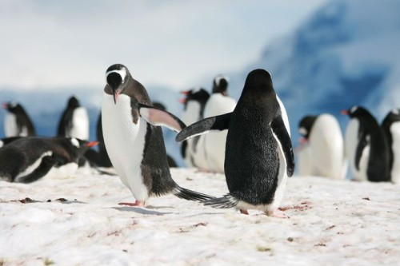

Examen 5 DIW¶
Animales¶
Listado de animales que reflejan la vida de un programador.
Gato¶
Descripción¶
El gato podría ser un excelente programador. Nocturno, perezoso y fanático de la comida. Los rasgos del gato describen perfectamente el estereotipo clásico de programador, eliminando la necesidad de tomar bebidas enegérticas.
Datos¶
Un equipo de científicos de la Universidad de Columbia ha relacionado en un estudio que el 87% de personas graduadas en Ingeniería Informática tienen o han tenido un gato de mascota.
Pingüino¶
Descripción¶
El pingüino es muy similar a un programador, por ejemplo, al igual que los programadores, los pingüinos no tienen una gran capacidad comunicativa. Además de eso, y por contraparte a los gatos, a los pingüinos les encanta la cafeína, ya que la mayoría de peces que consumen son ricos en estimulantes, y quién si no los programadores como máximos entendidos en cafeína y estimulantes.
Datos¶
Los Pingüinos de Madagascar son probablemente la mejor serie de dibujos animados sobre Pingüinos que existen, y de hecho, Kowalski tiene una personalidad totalmente similar a un Ingeniero Informático.